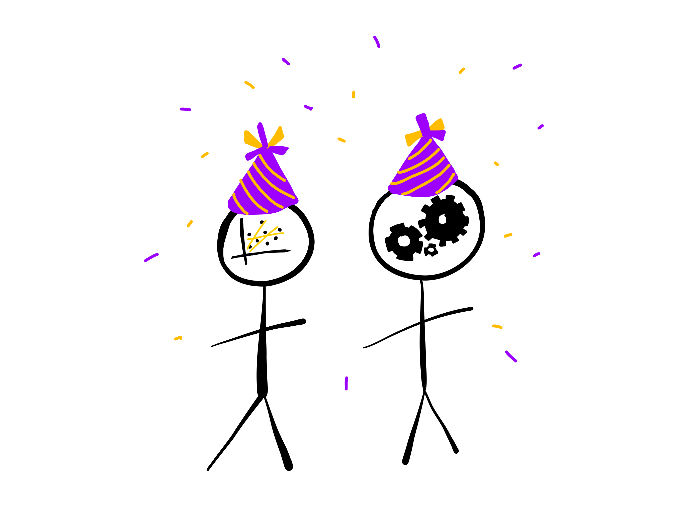
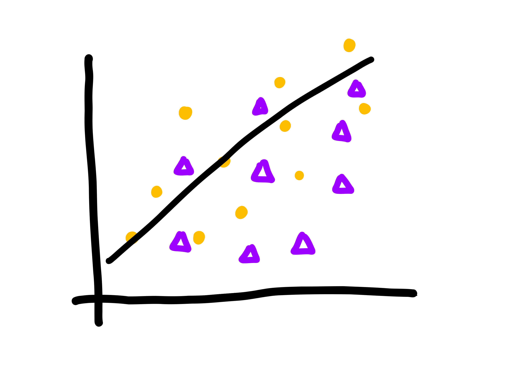
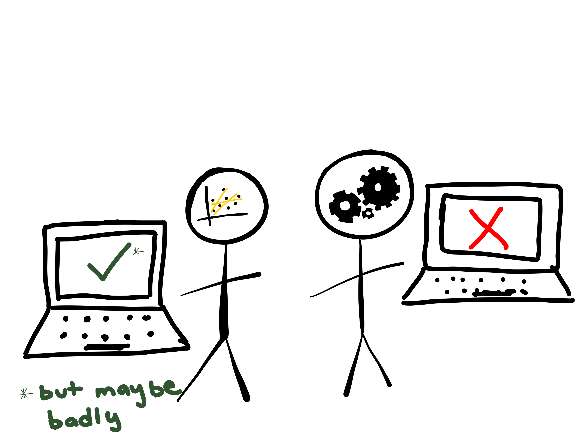

Building an MLOps strategy from the ground up
Crunch 2022
Isabel Zimmerman, RStudio, PBC
September 20, 2022
from the ground up
Tip
go to isabel.quarto.pub/crunch2022/ to follow along!
- what is MLOps anyway (and how can I start)? 🐶
- what do I need to keep in mind for tooling? 🔨
if you develop models…
you can operationalize them
if you develop models…
you should operationalize them
well, some of them
information -> 🐶 -> actionsinformation -> model -> actionsWhat is MLOps?
MLOps is…
a set of practices to deploy and maintain machine learning models in production reliably and efficiently

import pandas as pd
raw = pd.read_csv('https://raw.githubusercontent.com/rfordatascience/tidytuesday/master/data/2021/2021-03-02/youtube.csv')
df = raw[["like_count", "funny", "show_product_quickly", "patriotic", \
"celebrity", "danger", "animals"]].dropna()
print(df) like_count funny show_product_quickly patriotic celebrity danger \
0 1233.0 False False False False False
1 485.0 True True False True True
2 129.0 True False False False True
3 2.0 False True False False False
4 20.0 True True False False True
.. ... ... ... ... ... ...
241 10.0 True False True True False
243 572.0 False True True False False
244 14.0 True False False True True
245 12.0 True False False False True
246 334.0 False False False True False
animals
0 False
1 False
2 True
3 False
4 True
.. ...
241 True
243 True
244 False
245 False
246 False
[225 rows x 7 columns]import pandas as pd
raw = pd.read_csv('https://raw.githubusercontent.com/rfordatascience/tidytuesday/master/data/2021/2021-03-02/youtube.csv')
df = raw[["like_count", "funny", "show_product_quickly", "patriotic", \
"celebrity", "danger", "animals"]].dropna()
from sklearn import model_selection, preprocessing, pipeline, ensemble
X_train, X_test, y_train, y_test = model_selection.train_test_split(
df.drop(columns = ['like_count']),
df['like_count'],
test_size=0.2
)import pandas as pd
raw = pd.read_csv('https://raw.githubusercontent.com/rfordatascience/tidytuesday/master/data/2021/2021-03-02/youtube.csv')
df = raw[["like_count", "funny", "show_product_quickly", "patriotic", \
"celebrity", "danger", "animals"]].dropna()
from sklearn import model_selection, preprocessing, pipeline, ensemble
X_train, X_test, y_train, y_test = model_selection.train_test_split(
df.drop(columns = ['like_count']),
df['like_count'],
test_size=0.2
)
oe = preprocessing.OrdinalEncoder().fit(X_train)
rf = ensemble.RandomForestRegressor().fit(oe.transform(X_train), y_train)import pandas as pd
raw = pd.read_csv('https://raw.githubusercontent.com/rfordatascience/tidytuesday/master/data/2021/2021-03-02/youtube.csv')
df = raw[["like_count", "funny", "show_product_quickly", "patriotic", \
"celebrity", "danger", "animals"]].dropna()
from sklearn import model_selection, preprocessing, pipeline, ensemble
X_train, X_test, y_train, y_test = model_selection.train_test_split(
df.drop(columns = ['like_count']),
df['like_count'],
test_size=0.2
)
oe = preprocessing.OrdinalEncoder().fit(X_train)
rf = ensemble.RandomForestRegressor().fit(oe.transform(X_train), y_train)
rf_pipe = pipeline.Pipeline([('ordinal_encoder',oe), ('random_forest', rf)])MLOps is…
MLOps is… versioning
model
model_final
model_final_v2
model_final_v2_ACTUALLY
MLOps is… versioning
managing change in models
import pins
model_board = pins.board_temp(
allow_pickle_read = True)
from vetiver import VetiverModel, vetiver_pin_write
v = VetiverModel(rf_pipe, "ads", ptype_data = X_train)
vetiver_pin_write(model_board, v)
model_board.pin_meta("ads")Meta(title='ads: a pinned Pipeline object', description="Scikit-learn <class 'sklearn.pipeline.Pipeline'> model", created='20221003T221345Z', pin_hash='763578ac3f7ef1fd', file='ads.joblib', file_size=449122, type='joblib', api_version=1, version=Version(created=datetime.datetime(2022, 10, 3, 22, 13, 45), hash='76357'), name='ads', user={'ptype': '{"funny": true, "show_product_quickly": true, "patriotic": false, "celebrity": false, "danger": false, "animals": true}', 'required_pkgs': ['vetiver', 'scikit-learn']})MLOps is… versioning
where are these boards hosted?
MLOps is… deploying
MLOps is… deploying
putting a model in production
MLOps is… deploying
putting a model in production somewhere that is not on your local laptop
MLOps is… deploying
putting a model in production somewhere that is not on your local laptop
MLOps is… deploying
putting a model in production somewhere that is not on your local laptop
✅ using REST APIs

MLOps is… monitoring
MLOps is… monitoring
MLOps is… monitoring
import vetiver
from sklearn import metrics
from datetime import timedelta
metric_set = [metrics.mean_absolute_error, metrics.mean_squared_error]
metrics = vetiver.compute_metrics(
new_data,
"date",
timedelta(weeks = 1),
metric_set,
"like_count",
"preds"
)
m = vetiver.plot_metrics(metrics)
m.update_yaxes(matches=None)
m.show()MLOps is… monitoring
when things go wrong:
- retrain, retrain, retrain
- try a new model type
- remember to version!
MLOps is… thinking about making good models
MLOps is… thinking about making good models
Model Cards provide a framework for transparent, responsible reporting.
Use the vetiver `.qmd` Quarto template as a place to start,
with vetiver.model_card()MLOps is… thinking about making good models
MLOps is… thinking about making good models
From Mitchell et al. (2019):
Therefore the usefulness and accuracy of a model card relies on the integrity of the creator(s) of the card itself.
from the ground up
- what is MLOps anyway (and how can I start)? 🐶 ✅
- what do I need to keep in mind for tooling? 🔨
Tooling tips…

Tooling tips…
you (and your team!) are unique!
Tooling tips…
- composable
- in different environments
- with other tools
Tooling tips…
- composable
- reproducible
- open source 💖
Tooling tips…
- composable
- reproducible
- ergonomic

Tooling tips…
- composable
- reproducible
- ergonomic

Tooling tips…
- composable
- reproducible
- ergonomic
(and able to do the MLOps tasks we want)
from the ground up
- what is MLOps anyway (and how can I start)? 🐶 ✅
- what do I need to keep in mind for tooling? 🔨 ✅
MLOps is…
a set of practices to deploy and maintain machine learning models in production reliably and efficiently
versioning
deploying
monitoring
vetiver can help with this for your R and Python models!
Learn more
Documentation at https://vetiver.rstudio.com/
Recent screencast on deploying a model with Docker
End-to-end demos from RStudio Solutions Engineering in R and Python
These slides! Visit isabel.quarto.pub/crunch2022